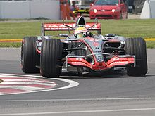
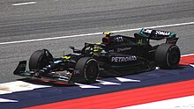

Biography
Sir Lewis Carl Davidson Hamilton MBE HonFREng (born 7 January 1985) is a British racing driver currently competing in Formula One, driving for Mercedes. In Formula One, Hamilton has won a joint-record seven World Drivers' Championship titles (tied with Michael Schumacher), and holds the records for the most wins (103),pole positions (104), and podium finishes (197) , among others. Born and raised in Stevenage, Hertfordshire, Hamilton joined the McLaren Young Drier Programme in 1998. This led to a Formula One drive with McLaren from 2007 to 2012, making him the first black driver to race in the series. In his inaugural season, Hamilton set numerous records as he finished runner-up to Kimi Räikkönen by one point. The following season, he won his maiden title in dramatic fashion—making a crucial overtake on the last lap of the last race of the season—to become the then-youngest ever Formula One World Champion. After six years with McLaren, Hamilton signed with Mercedes in 2013. Changes to the regulations for 2014 mandating the use of turbo-hybrid engines saw the start of a highly successful period for Hamilton, during which he won six further drivers' titles. Consecutive titles came in 2014 and 2015 during an intense rivalry with teammate Nico Rosberg. Following Rosberg's retirement in 2016, Ferrari's Sebastian Vettel became Hamilton's closest rival in two championship battles, in which he twice overturned mid-season point deficits to claim consecutive titles again in 2017 and 2018. His third and fourth consecutive titles followed in 2019 and 2020 to equal Schumacher's record of seven drivers' titles. Hamilton has been credited with furthering Formula One's global following by appealing to a broader audience outside the sport, in part due to his high-profile lifestyle, environmental and social activism, and exploits in music and fashion. He has also become a prominent advocate in support of activism to combat racism and push for increased diversity in motorsport. Hamilton was listed in the 2020 issue of Time as one of the 100 most influential people globally, and was knighted in the 2021 New Year Honours.
Early life and education
Hamilton was born on 7 January 1985 in Stevenage, Hertfordshire. His father, Anthony Hamilton, is black and is of Grenadian descent, while his mother, Carmen Larbalestier, is White British, and from Birmingham, making him mixed-race; Hamilton has identified as black. Hamilton's parents separated when he was two, after which he lived with his mother and older half-sisters, Samantha and Nicola, until he was twelve.Hamilton then lived with his father, stepmother Linda, and his half-brother Nicolas, who is also a professional racing driver. Hamilton was raised a Catholic. Hamilton's father bought him a radio-controlled car when he was five. Hamilton finished second in the national BRCA championship the following year against adult competition. Being the only black child racing at his club, Hamilton was subjected to racist abuse. Hamilton's father bought him a go-kart for Christmas when he was six and promised to support his racing career as long as he worked hard at school. To support his son, Hamilton's father took redundancy from his position as an IT manager and became a contractor, sometimes working up to four jobs at a time including employment as a double glazing salesman, dishwasher, and putting up signs for estate agents, while still attending his son's races. Hamilton's father later set up his own IT company. He continued to be Hamilton's manager until early 2010. Hamilton was educated at The John Henry Newman School, a voluntary aided Catholic secondary school in Stevenage. Hamilton has said that at the age of five he took up karate to defend himself as a result of bullying at school. He was also excluded from school for a period when he was mistakenly identified as having attacked a fellow student who was treated in hospital for his injuries. In addition to racing, he played association football for his school team with eventual England international, Ashley Young. Hamilton, an Arsenal fan, said that if Formula One had not worked for him, he would have been a footballer or a cricketer, having played both for his school teams. In February 2001, he began studies at Cambridge Arts and Sciences (CATS), a private sixth-form college in Cambridge.
Karting
Hamilton began karting in 1993 and quickly began winning races and cadet class championships.Two years later, he became the youngest driver to win the British cadet karting championship at the age of ten. That year, Hamilton approached McLaren Formula One team boss Ron Dennis at the Autosport Awards for an autograph and said: "Hi. I'm Lewis Hamilton. I won the British Championship and one day I want to be racing your cars."Dennis wrote in Hamilton's autograph book: "Phone me in nine years, we'll sort something out then." When Hamilton was 12, Ladbrokes took a bet, at 40/1 odds, that Hamilton would win a Formula One race before the age of 23; another predicted, at 150/1 odds, that he would win the World Drivers' Championship before he was 25.In 1998, Dennis called Hamilton following his second Super One series and British championship wins,to offer Hamilton a role in the McLaren driver development programme.The contract included an option of a future Formula One seat, which would make Hamilton the youngest driver to secure a contract that later resulted in a Formula One drive.Hamilton continued his progress in the Intercontinental A (1999), Formula A (2000) and Formula Super A (2001) ranks, and became European Champion in 2000 with maximum points. In Formula A and Formula Super A, racing for TeamMBM.com, his teammate was Nico Rosberg, who would later drive for the Williams and Mercedes teams in Formula One; they would later team up again for Mercedes from 2013 to 2016. Following his karting successes, the British Racing Drivers' Club made him a "Rising Star" Member in 2000.In 2001, Michael Schumacher made a one-off return to karts and competed against Hamilton along with other future Formula One drivers Vitantonio Liuzzi and Nico Rosberg. Hamilton ended the final in seventh, four places behind Schumacher. Although the two saw little of each other on the track, Schumacher praised the young Briton.
Formula Renault and Formula three
Hamilton began his car racing career in the 2001 British Formula Renault Winter Series, finishing fifth in the standings.This led to a full 2002 Formula Renault UK campaign with Manor Motorsport in which he finished fifth overall.He remained with Manor for another year, winning the championship ahead of Alex Lloyd.Having clinched the championship, Hamilton missed the last two races of the season to make his debut in the season finale of the British Formula 3 Championship.In his first race he was forced out with a puncture,and in the second he crashed out and was taken to hospital after a collision with teammate Tor Graves.Asked in 2002 about the prospect of becoming one of the youngest ever Formula One drivers, Hamilton replied that his goal was "not to be the youngest in Formula One" but rather "to be experienced and then show what I can do in Formula One".He made his debut with Manor in the 2004 Formula 3 Euro Series, ending the year fifth in the championship.He also won the Bahrain F3 Superprix and twice raced in the Macau F3 Grand Prix.Williams had come close to signing Hamilton but did not because BMW, their engine supplier at the time, would not fund him.Hamilton eventually re-signed with McLaren. According to then McLaren executive and future CEO Martin Whitmarsh, who was responsible for guiding Hamilton through the team's young driver programme, he and Anthony Hamilton had a "huge row" at the end of the season, with Lewis' father pushing for him to move up to GP2 for 2005, while Whitmarsh felt that he should remain in F3 for a second season, culminating in Whitmarsh tearing up Lewis' contract; however, Lewis called Whitmarsh six weeks later and re-signed with the team. Hamilton first tested for McLaren in late 2004 at Silverstone. Hamilton moved to the reigning Euro Series champions ASM for the 2005 season and dominated the championship, winning 15 of the 20 rounds. He also won the Marlboro Masters of Formula 3 at Zandvoort. After the season British magazine Autosport featured him in their "Top 50 Drivers of 2005" issue, ranking Hamilton 24th.
GP-2
Hamilton moved to ASM's sister GP2 team, ART Grand Prix, for the 2006 season. Hamilton won the GP2 championship at his first attempt, beating Nelson Piquet Jr. and Alexandre Prémat. He secured a dominant win at the Nürburgring, despite a penalty for speeding in the pit lane. At his home race at Silverstone, Hamilton overtook two rivals at Becketts, a series of high-speed bends where overtaking is rare.In Istanbul he recovered from a spin that left him in eighteenth place to take second.Hamilton won the title in unusual circumstances, inheriting the final point he needed after Giorgio Pantano was stripped of fastest lap in the Monza feature race. Hamilton's success in the GP2 championship coincided with a vacancy at McLaren following the departure of Juan Pablo Montoya to NASCAR and Kimi Räikkönen to Ferrari.After months of speculation on whether Hamilton, Pedro de la Rosa or Gary Paffett would be paired with defending champion Fernando Alonso for 2007, Hamilton was confirmed as the team's second driver. He was told of McLaren's decision at the end of September, but the news was not made public for almost two months, for fear that it would be overshadowed by Michael Schumacher's retirement announcement.
Formula One career
McLaren(2007-2012) Mclaren official website
Hamilton's first season in Formula One saw him partner two-time and defending World Champion Fernando Alonso. Hamilton is the first and, as of 2023, the only black driver to race in the series. After finishing on the podium in his debut, Hamilton went on to set several records as he finished runner-up in the 2007 World Drivers' Championship to Kimi Räikkönen by one point, including those for the most consecutive podium finishes from debut , the joint most wins in a debut season and the most points in a debut season . Throughout the season, Hamilton and Alonso were involved in a number of incidents which resulted in tensions between both drivers and the team, culminating in Alonso and McLaren terminating their contract by mutual consent in November. Following a successful first season at McLaren, Hamilton signed a multi-million-pound contract to stay with the team until 2012. Hamilton's success continued in 2008 as he amassed five victories and ten podium finishes. As the season reached its conclusion in Brazil, it became a clear two-way fight for the title between the home favourite Felipe Massa and the young Briton. Hamilton won his first title in dramatic fashion in the last race of the season, the 2008 Brazilian Grand Prix, overtaking Timo Glock for fifth position in the final corners of the last lap to become the then-youngest Formula One World Champion in history and to deny race-winner Massa the title by one point. This made Hamilton the first British driver to win the World Championship since Damon Hill in 1996.[64]In his last four years with McLaren, Hamilton continued to score podium finishes and race victories. Hamilton entered the final round of the 2010 season with a chance of winning the title, but ultimately finished fourth as Sebastian Vettel won the race to take his maiden drivers' crown. The following year was the first season he had been out-scored by a teammate, as Jenson Button finished runner-up to champion Sebastian Vettel, during a year in which distractions in his private life and run-ins with FIA officials saw Hamilton finish a lowly fifth in the standings, after which he vowed he would return to form for 2012. Hamilton achieved four race-wins in the 2012 season as he finished fourth in the standings. Before the end of the year, Hamilton announced, to much surprise, that he would be joining Mercedes for the 2013 season, replacing the retiring Michael Schumacher.
Mercedes(2013-present) Mercedes AMG official website
Upon signing with Mercedes in 2013, Hamilton was reunited with his childhood karting teammate, Nico Rosberg. The move was met with surprise by pundits and the public, with some describing the move to Mercedes, a team with no recent history of success, as a gamble. In his first season with the Silver Arrows, Hamilton secured a sole race victory, winning the Hungarian Grand Prix, where he converted an unexpected pole position into a winning margin of over 11 seconds ahead of second-place finisher Kimi Räikkönen,[69] alongside a number of podium finishes and pole positions, finishing fourth in the standings once again, the third time in five years. Changes to regulations for the 2014 season, which mandated the use of turbo-hybrid engines, contributed to the start of a highly successful era for Hamilton. That year saw Mercedes win 16 of the 19 races that season, 11 of those secured by Hamilton as he prevailed in a season-long duel for the title against teammate Rosberg. Clinching his second drivers' title, and eclipsing the victory tally of all British drivers before him, Hamilton declared over team-radio after the final race in Abu Dhabi: "This is the greatest day of my life."[66] New driver number regulations brought in for 2014 allowed drivers to pick a unique car number to use for their entire career, and so Hamilton elected to drive under his old karting No. 44 for the remainder of his career. Before the start of the 2015 season, Hamilton announced he would not be exercising his option of switching his car number to 1, as was his prerogative as reigning World Champion, and would instead continue to race with his career No. 44. It was the first season since 1994, when Alain Prost retired from the sport following his fourth and final World Drivers' Championship title in 1993, that the field did not contain a car bearing the No. 1. Hamilton dominated the 2015 season, winning ten races finishing on the podium a record seventeen times as he matched his hero Ayrton Senna's three World Championships titles. The rivalry between him and Rosberg intensified, climaxing in a heated battle at the US Grand Prix where Hamilton won in an action-packed, wheel-to-wheel battle with his teammate to clinch the title with three races to spare.[66] That year, Hamilton extended his contract with Mercedes for three additional years in a deal reportedly worth more than £100 million, making him one of the best-paid drivers in Formula One,as well as allowing Hamilton to retain his own image rights, which is considered unusual in the sport, and keep his championship-winning cars and trophies.
Despite recording more pole positions and race wins than any other driver in 2016, Hamilton lost the drivers' title by five points to his teammate, Rosberg. The team's policy of letting the pair fight freely led to several acrimonious exchanges both on and off the track, culminating in Hamilton defying team-orders at the season finale in Abu Dhabi and deliberately slowing to back Rosberg into the chasing pack at the end of the race in an unsuccessful bid to encourage other drivers to overtake his teammate, which would have allowed him to win the title.Ultimately, a succession of poor starts from Hamilton early in the season and a crucial engine blowout in Malaysia meant Rosberg took the title, which he successfully secured before announcing his shock retirement from the sport immediately after beating his rival.
Following Rosberg's retirement, Ferrari's Sebastian Vettel became Hamilton's closest rival as the pair exchanged the championship lead throughout 2017 in a tense title fight. Hamilton registered 11 pole positions that season as he took the record for the all-time most pole positions, and his consistency (finishing every race in the points), as well as a lack of a serious challenge from his new teammate Valtteri Bottas, saw him record nine race victories and secure his fourth World Drivers' title as he overturned a points deficit to Vettel in the first half of the season, ultimately wrapping the title up in Mexico with two races to spare.
The 2018 season was the first tie that two four-time World Champions, Hamilton and Vettel, would be competing for a fifth title and was billed as the "Fight for Five" by journalists and fans. As with the season before, Ferrari and Vettel appeared to have the upper hand for much of the season, topping the standings until the half-way point. However, Vettel's season unravelled with a number of driver and mechanical errors, while Hamilton's run of six wins in seven in the latter half of the season saw Hamilton clinch the title in Mexico for a second year running as he set a new record for the most points scored in a season During the season, Hamilton signed a two-year contract with Mercedes, reported to be worth up to £40 million per year, making him the best-paid Formula One driver in history.
Having signed a contrat with Mercedes that lasted until 2020, it was confirmed Hamilton would defend his title in 2019. Hamilton led the drivers' standings for the majority of the season, fending off title challenges from team-mate Bottas, the Honda-powered Red Bull of Verstappen and Ferrari's recently promoted Leclerc, to clinch his sixth drivers' crown at the 2019 United States Grand Prix with two races remaining. After scoring his sixth career grand slam in the final race of the season, Hamilton ended the season with 11 wins (matching his previous best in 2014 and 2018) and 17 podiums (matching the all-time record for a fourth time) as well as achieving 5 pole positions. His total of 413 points for the season was a new all-time record, seeing the Briton finish 87 points clear of second-placed Bottas.
Hamilton won his seventh drivers' title in 2020, equalling the record set by Schumacher, in a season heavily impacted by the COVID-19 pandemic. Over the shortened seventeen-race season, Hamilton took 11 wins (equalling his previous personal best, but in fewer races) including one in Portugal to break Schumacher's record of 91 wins.He also took 14 podiums and 10 pole positions. Hamilton missed the 2020 Sakhir Grand Prix after contracting COVID-19, his first race absence since his debut in 2007. Hamilton clinched the title at the 2020 Turkish Grand Prix with three rounds to spare and ended the season 124 points clear of his team-mate, Bottas, who finished second in the standings.[90] Amid Formula One's We Race as One campaign and growing global support for the Black Lives Matter movement, Hamilton took the knee ahead of every race he entered and wore t-shirts bearing the Black Lives Matter slogan. Hamilton and Bottas' W11 cars also sported a black livery as a statement of Mercedes' commitment to diversity.
Early on in the 2021 season, Hamilton and Red Bull's Max Verstappen emerged as title favourites. The pair frequently exchanged the championship lead throughout the season—often sparring (and occasionally coming together) on track—and entered the last race in Abu Dhabi level on points. In Abu Dhabi, Verstappen overtook Hamilton on the final lap of the race, denying Hamilton his eighth title. During the season, Hamilton became the first driver to surpass 100 pole positions and 100 race wins, respectively.The season finale was marred by controversy over race director Michael Masi's decision to instruct only the lapped cars separating Verstappen and Hamilton to un-lap themselves under the safety car, which eliminated any gap between the pair and allowed the Dutchman, running newly fitted soft tyres, to enter the final lap immediately behind Hamilton on his worn hard tyres.Four days after the race, the FIA announced that it would conduct an internal investigation into the incident. Masi was subsequently removed from his role as race director, with the FIA World Motor Sport Council report finding that "human error" resulted in the failure to follow Formula One Sporting Regulations concerning the withdrawal of the safety car, but also that the final standings "are valid, final and cannot now be changed."[100] Notwithstanding the controversy in Abu Dhabi, BBC Sport's Andrew Benson described the season as "one of the most intense, hard-fought battles in sporting history", with Hamilton and Verstappen having "been head and shoulders—and a lot more—clear of every other driver on the grid."Hamilton was partnered by George Russell for 2022, in place of the departing Bottas.The season saw significant changes in technical regulations which sought to utilise ground effect to generate downforce. During pre-season testing in Bahrain, Mercedes introduced its "zero sidepod" car design, which was radically different to that of its competitors. The Mercedes W13 suffered with extreme porpoising early in the season which limited the car's potential; at the Saudi Arabian Grand Prix, Hamilton deemed the car "undrivable".During the first half of the season, Hamilton was marginally low on points compared to Russell, despite having been involved in the development of the W13, he had to try on experimental car setups until the British Grand Prix. As his car development contributions were concluded, he was able to perform better. Hamilton scored more podium finishes and championship points than Russell during the second half of the season. During the season Hamilton set records such as, most consecutive seasons with at least one podium finish, most consecutive seasons with at least one lap led, most races with a single constructor, most Q3 appearances, most top 10 finishes and most chequered flags reached at the Monaco Grand Prix, most podium finishes at a single circuit, most points scored at the Monza Circuit and most podium finishes at the United States Grand Prix. By the end of the season, Hamilton achieved nine podiums but failed to achieve a race win or pole position in a season for the first time in his Formula One career. He finished in sixth place in the drivers' championship, 35 points behind Russell, who finished fourth. But Hamilton managed to qualify on higher grid positions and scored more podium finishes than Russell. Mercedes started the 2023 season with concerns over their competitiveness, with Hamilton saying they were "not where they wanted to be" after preseason testing. He finished fifth in the opening race in Bahrain, over 50 seconds behind the winner Verstappen. Hamilton achieved his first podium of the season in Australia to extend his ownAfter back to back podium finishes in Spain and Canada, he fought from seventh on the grid to take third place at his home race at Silverstone. At the 2023 Hungarian Grand Prix Hamilton qualified 0.003 seconds in front of Verstappen to take his 104th pole position and his first since 2021. On 31 August 2023, the day before the first practice session of the 2023 Italian Grand Prix, Hamilton signed a two-year contract to remain with Mercedes through the 2025 season. George Russell also signed a two-year extension, retaining Mercedes' driver pair.At the 2023 Singapore Grand Prix, Hamilton qualified fifth, but would finish the race in third after inheriting the position after Russell crashed out from third place on the last lap.